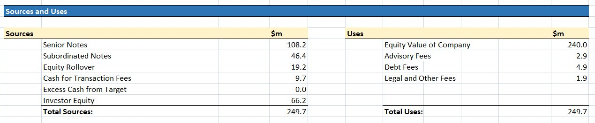
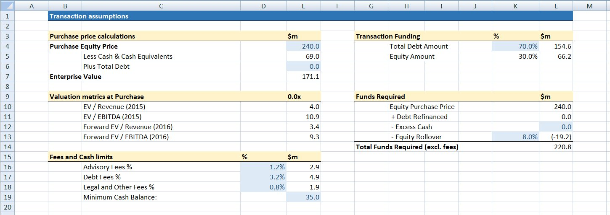
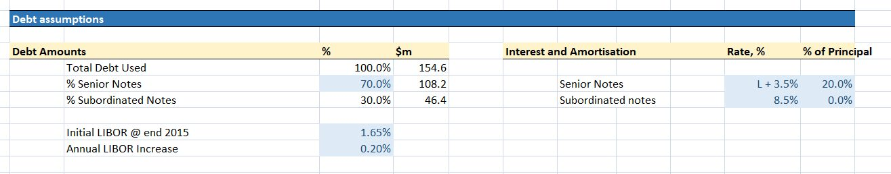
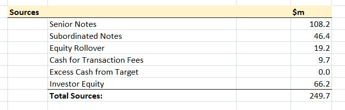
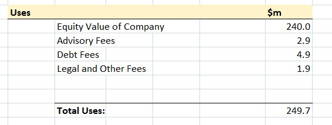

In a corporate finance transaction, such as a Leveraged Buyout, a sources and uses table outlines all the sources of funding for the transaction, and all the uses of this funding. These two amounts should balance, indicating all the funding required to complete the transaction is available.
Below we can see a sources and uses table for a Leveraged Buyout (LBO) transaction, where a company called MarkerCo is being acquired by a private equity firm called PrivEq. In this post, we’ll learn exactly how to create the table below. Sources and Uses tables are used in many other types of financial transaction, and the principles we’ll see here could be applied easily to other transaction types.

Where do the numbers come from?
Creating a sources and uses table is actually a pretty straightforward process. For the most part, we simply find the relevant figures in the LBO model, and copy them into the sources and uses table. The most difficult part may be identifying all the sources and all the uses. These numbers come from 2 main areas, which you should create as part of your LBO model before creating a sources and uses table.
Transaction Assumptions

The transaction assumptions section helps determine the actual funds required to complete the transaction. It determines the Enterprise Value of the company being acquired, how the transaction will be funded, and the fees that will be involved in the transaction. The Uses of funding in the transaction typically come from this section of the model, as well as some of the Sources.
If you’re not sure how to create transaction assumptions, we created a post detailing the process here.

Debt Assumptions

This section outlines the different types of debt instrument that will be used in the transaction, as well as the proportions of debt that will come from each instrument, the interest rates to be paid on each instrument. For a leveraged buyout, many of the sources of funding will come from this section.
This section should be created after the transaction assumptions section, as the total debt required will be a transaction assumption.
Understanding the Sources Table

The sources table lists all the sources of funding that will be used in the transaction. There is a huge variety of sources of funding that can be used for transactions like this. In this transaction, the funding sources are:
- Senior Notes: In this case, this is a secured, 5-year amortizing loan. The amount of debt raised through this is found in the debt assumptions section.
- Subordinated Notes: These are unsecured debt, used to make up the balance of the debt required to fund the transaction. This figure is also obtained from the debt assumptions.
- Equity Rollover: An equity rollover occurs when some of the existing shareholders in MarkerCo roll over their equity after the LBO. Consequently, PrivEq does not have to purchase their shares. We obtain this figure from the transaction assumptions section. There, it is negative, but we convert it to a positive number as the value of the rolled over equity serves as a contribution of funds to the transaction.
- Cash for Transaction Fees: This covers the transaction fees identified in the transaction assumptions section. The amount is therefore equal to the sum of the transaction fee amounts in this section. Normally, this figure should be included on MarkerCo’s balance sheet, but in this example, we assumed that transaction fees are all covered externally, which can sometimes happen.
- Excess Cash from Target: The transaction may be partly funded by excess cash held by the business. This figure can be found in the transaction assumptions section.
- Investor Equity: This refers to the amount of the transaction that is not being funded by debt. In this case, this is 30% of the transaction funding, and this figure is found in the transaction assumptions section.
Understanding the Uses Table

The Uses table outlines how the funds involved in the transaction will be spent. In this specific example, the uses are fairly simple, and are limited to the purchase price of MarkerCo, and the various fees associated with the transaction. The uses listed here are:
- Equity Value of Company: This is the Purchase Equity Price that the board of MarkerCo is seeking for the company. This figure is found in the transaction assumptions section.
- Transaction Fees: There are several different fees that are incurred as part of the transaction, in this case advisory fees, debt fees, and legal fees. These figures are all calculated in the transaction assumptions section.
Conclusion
As you can see in the example above, the total source and the total uses should balance. Here both figures are equal to $249.7 million. This ensures that all the sources of funding for the transaction will be used, and ensures that funding sources are available for all the funding uses in the transaction.
Creating a sources and uses table is a good idea when building a model of a corporate finance transaction. In this case, it acts as a useful check of the transaction assumptions and debt assumptions of our deal, ensuring all the funding elements of the deal are accounted for correctly. If modeling financial transactions, then a sources and uses table should be an important part of your models.